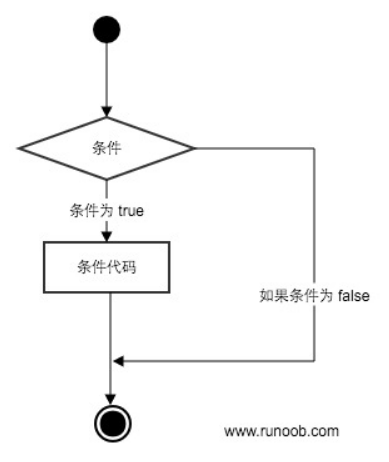
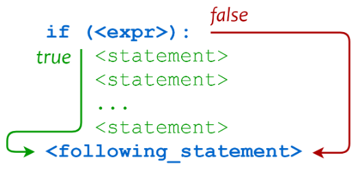
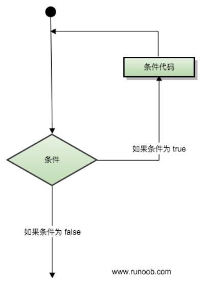
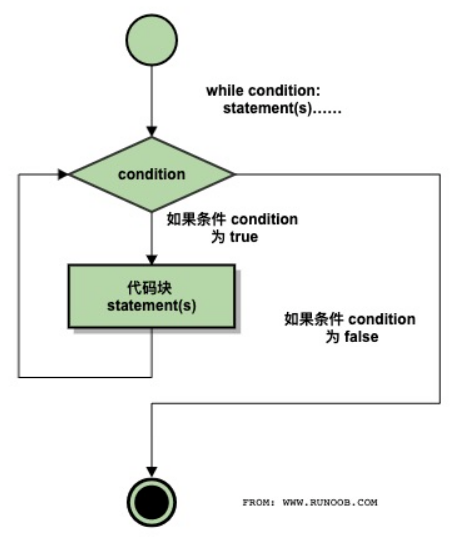
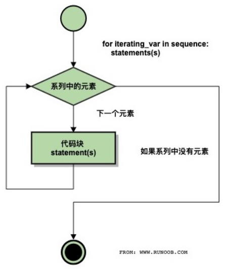
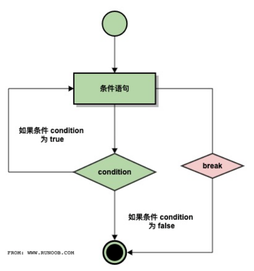
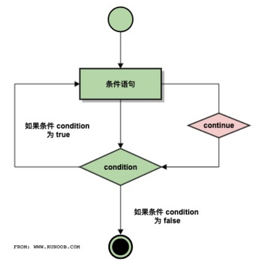
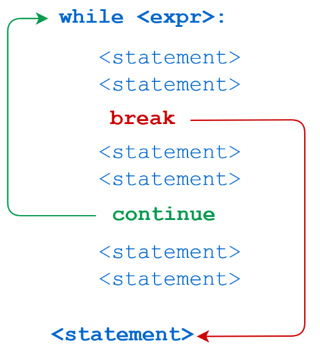
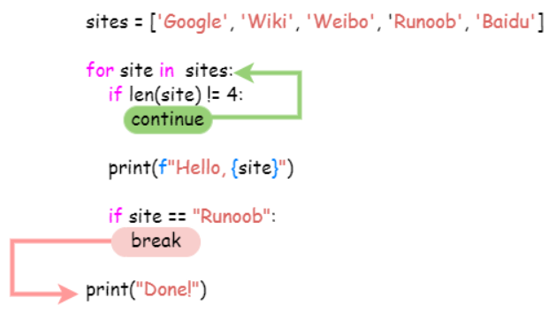

条件控制
我们都知道流程图是有多个分支的，程序中也是如此，在 Python 中是用 if 语句来判断程序该走哪个分支的。它的执行过程如下：

代码执行过程如下

if
if语句的一般形式如下：
if condition_1:
statement_block_1
- 如果 condition_1 为 True，执行 statement_block_1。
condition_1 是条件表达式，由各种运算符和数据类型组成，条件表达式的结果可以是 True/False 的布尔值，也可以是非布尔值。Python 中的 0、None、空列表、空字典等都会被认为是 False，反之都会被认为是 True。
else
else语句在条件为 False 时执行：
if condition_1:
statement_block_1
else:
statement_block_2
- 如果 condition_1 为 True，执行 statement_block_1。
- 如果 condition_1 为 False，执行 statement_block_2。
elif
if…else 实现了“如果满足条件，那么 xxx，否则 xxx”，除此之外，还可以用elif实现多个连续判断，分别执行不同的语句：
if condition_1:
statement_block_1
elif condition_2:
statement_block_2
else:
statement_block_3
- 如果 condition_1 为 True，执行 statement_block_1。
- 如果 condition_1 为 False，再判断，如果 condition_2 为 True，执行 statement_block_2。
- 否则，执行 statement_block_3。
elif可以写多个。这种写法的执行顺序是从上往下，只要满足了某个if或elif的条件，就会在当前分支执行后跳出去，不再执行后面的判断，如果每个if或elif的条件都是 False，最后就会执行else。
if 嵌套
假如想满足if或elif的条件后，继续做判断，那么就需要进行if语句嵌套，让 statement_block_1 等代码块也包含if语句：
if 表达式1:
语句
if 表达式2:
语句
elif 表达式3:
语句
else:
语句
elif 表达式4:
语句
else:
语句
示例：
num=int(input("输入一个数字："))
if num%2==0:
if num%3==0:
print("你输入的数字可以整除 2 和 3")
else:
print("你输入的数字可以整除 2，但不能整除 3")
else:
if num%3==0:
print("你输入的数字可以整除 3，但不能整除 2")
else:
print ("你输入的数字不能整除 2 和 3")
循环语句
条件语句是从上往下流水式单次执行，循环语句和条件语句的不同点在于，循环是可以回到起始点，反复执行多次的，它的执行过程如下：

while
循环语句的一种形式是 while 语句：
while 判断条件(condition)：
执行语句(statements)……
它的执行流程图如下：

示例：
n = 100
sum = 0
counter = 1
while counter <= n:
sum = sum + counter
counter += 1
print("1 到 %d 之和为: %d" % (n,sum)) # 5050
for
循环语句的另一种形式是 for 语句：
for <variable> in <sequence>:
<statements>
else:
<statements>
它的执行流程图如下：

示例：
languages = ["C", "C++", "Perl", "Python"]
for x in languages:
print(x)
break
break 用来跳出整个循环，它的执行流程图如下：

示例：
for letter in 'Runoob': # 第一个实例
if letter == 'b':
break
print ('当前字母为 :', letter)
var = 10 # 第二个实例
while var > 0:
print ('当期变量值为 :', var)
var = var -1
if var == 5:
break
print ("Good bye!")
continue
break 用来跳出整个循环，continue 则是用来跳过当前循环，回到起点，继续下一次循环。它的执行流程图如下：

示例：
for letter in 'Runoob': # 第一个实例
if letter == 'o': # 字母为 o 时跳过输出
continue
print ('当前字母 :', letter)
var = 10 # 第二个实例
while var > 0:
var = var -1
if var == 5: # 变量为 5 时跳过输出
continue
print ('当前变量值 :', var)
print ("Good bye!")
break 和 continue 在 while 循环和 for 循环中的代码执行过程如下：


循环 else
循环后面可以加 else 语句，while...else，for...else。咋看一下 else 好像并没有什么用，因为 while 循环条件为 False 或 for 循环结束后，一定会执行接下来的语句。但是如果循环中出现了 break，当循环从 break 跳出来后，是不会执行 else 语句的。例如：
for n in range(2, 10):
for x in range(2, n):
if n % x == 0:
print(n, '等于', x, '*', n//x)
break
else:
# 循环中没有找到元素
print(n, ' 是质数')
range()函数可以生成数字序列。
无限循环
通过设置 while 循环条件始终为 True，可以让循环一直进行下去，例如：
while True:
pass
pass 是占位语句，不执行任何操作。
无限循环是很有用的，比如定时任务，每隔 5 分钟收 1 次邮件：
import time
while True:
receive_email()
time.sleep(300)
还有比如客户端和服务器保持连接的心跳机制等。
小结
本文介绍了条件控制和循环语句，也就是写 Python 常用的if、while、for语句，同时也讲解了附带语句elif、else、break、continue、pass的使用。同时也包括了 if 嵌套、循环 else、无限循环的知识点。这一部分的知识非常重要，是代码的骨架，除了看文章，学代码最好的方式是实际敲代码。我们建了一个“Python 互助讨论群”，每周日会有算法刷题打卡活动（照着答案敲一遍也 ok），公众号后台回复“加群”即可加入，有兴趣的同学可以一起来相互学习交流呀。
参考资料：
https://www.runoob.com/python3/python3-conditional-statements.html